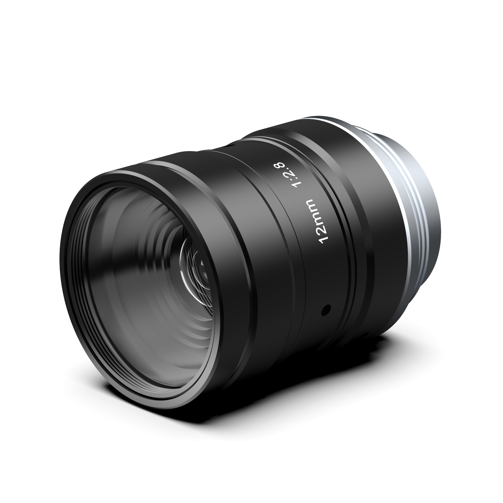

C Series 12MP
Models include 8mm, 12mm, 16mm, 25mm, 35mm, and 50mm focal length options for industrial vision imaging.
Machine Vision Lenses
SJI supplies own-brand C-mount fixed focal length lenses for machine vision imaging, code reading, positioning, inspection, and measurement applications.

Series12MP C Series and 25MP K Series
MountC-mount fixed focal length lens options
ApplicationsInspection, positioning, measurement, and code reading imaging
Selection focusSensor size, working distance, FOV, and resolution requirement
Product Line
The current source material includes two major lens groups. The C Series focuses on 12MP imaging needs, while the K Series covers 25MP, 1.1 inch applications with focal lengths from 12mm to 75mm.
Models include 8mm, 12mm, 16mm, 25mm, 35mm, and 50mm focal length options for industrial vision imaging.
1.1 inch 25MP fixed focal lenses with 12mm, 16mm, 25mm, 35mm, 50mm, and 75mm options.
Share camera sensor size, working distance, target FOV, resolution requirement, and installation space.
Model Matrix
| Model | Series | Focal Length | Resolution | Iris | Focus | Mount | Dimensions |
|---|---|---|---|---|---|---|---|
| C0828-SV-12M | C Series | 8mm | 12MP | F2.8-F16 | 0.05m-Inf. | C | Dia.29 x 29.4mm |
| C1228-SV-12M | C Series | 12mm | 12MP | F2.8-F16 | 0.1m-Inf. | C | Dia.29 x 33.5mm |
| C1628-SV-12M | C Series | 16mm | 12MP | F2.8-F16 | 0.1m-Inf. | C | Dia.29 x 34.5mm |
| C2528-SV-12M | C Series | 25mm | 12MP | F2.8-F16 | 0.25m-Inf. | C | Dia.29 x 35.5mm |
| C3528-SV-12M | C Series | 35mm | 12MP | F2.8-F16 | 0.25m-Inf. | C | Dia.29 x 47.5mm |
| C5028-SV-12M | C Series | 50mm | 12MP | F2.8-F16 | 0.3m-Inf. | C | Dia.29.5 x 50.5mm |
| K1228-SV-25M | K Series | 12mm | 25MP | F2.8-F16 | 0.1m-Inf. | C | Dia.59 x 77mm |
| K1628-SV-25M | K Series | 16mm | 25MP | F2.8-F16 | 0.15m-Inf. | C | Dia.42 x 56mm |
| K2528-SV-25M | K Series | 25mm | 25MP | F2.8-F16 | 0.15m-Inf. | C | Dia.35 x 42.8mm |
| K3528-SV-25M | K Series | 35mm | 25MP | F2.8-F16 | 0.2m-Inf. | C | Dia.35 x 45.6mm |
| K5028-SV-25M | K Series | 50mm | 25MP | F2.8-F16 | 0.25m-Inf. | C | Dia.35 x 56.6mm |
| K7528-SV-25M | K Series | 75mm | 25MP | F2.8-F16 | 0.45m-1.9m | C | Dia.35 x 68.5mm |
MOQConfirm with sales
Lead timeConfirm by focal length, quantity, and stock
WarrantyStandard industrial lens support
DocumentsLens model sheet and selection support available on request
Send the camera sensor size, target field of view, working distance, resolution requirement, and installation limit. SJI can recommend a suitable C-mount lens family.